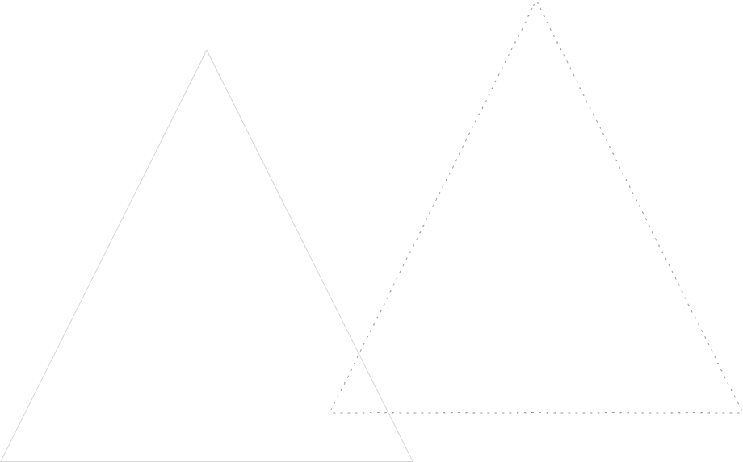

Collaboro con agenzie digitali, startup e aziende italiane ed estere
Nella fase strategica accompagno clienti e aziende nella definizione di un prodotto o servizio digitale. Come? Attraverso un processo di scoperta dei problemi rilevanti per il business
Un processo continuativo di consulenza sullo studio degli utenti, la creazione o validazione di modelli di business e il monitoraggio di KPI.
Nella fase di esperienza mi occupo di integrare le mie competenze di user experience design, interaction design, service design e digital marketing.
BRAND CON CUI HO COLLABORATO

Come collaboro?
Organizzando meeting schedulati e definiti con uno scopo ben definito. Ogni meeting è seguito da una lista di punti d’azione (assegnare task, smarcare punti, mandare preventivo, ecc.) da smarcare per il meeting successivo.
01
Primo contatto
Tramite questo sito, mail o canali social puoi scrivermi un messaggio e ti risponderò tra le 24 e le 48h. Scrivimi qui sul sito.
02
Primo contatto
Tramite questo sito, mail o canali social puoi scrivermi un messaggio e ti risponderò tra le 24 e le 48h. Scrivimi qui sul sito.
03
Primo contatto
Tramite questo sito, mail o canali social puoi scrivermi un messaggio e ti risponderò tra le 24 e le 48h. Scrivimi qui sul sito.
04
Primo contatto
Tramite questo sito, mail o canali social puoi scrivermi un messaggio e ti risponderò tra le 24 e le 48h. Scrivimi qui sul sito.
Agenzie Digitali
Collaboro con alcune agenzie su progetti di piccole e medie dimensioni, gestendo il mio tempo in maniera autonoma, e se necessario raggiungendo l’agenzia per il corso del progetto. Visto il numero di richieste per progetti non posso lavorare per oltre i 3 mesi su uno stesso progetto.
ATTIVITÀ REALIZZATE PER LE AGENZIE
Facilitatore per workshop da remoto
Progettazione wireframes
Prototipi interattivi
Usability e user testing
Monitoraggio analitics
Interviste con gli utenti
TIPOLOGIA DI CONTRATTO
A progetto, freelance continuativo
DURATA MAX
60 giorni lavorativi
BRAND CON CUI HO COLLABORATO
Sei un’agenzia e vuoi collaborare?
Collaboro con alcune agenzie su progetti di piccole e medie dimensioni, gestendo il mio tempo in maniera autonoma, e se necessario raggiungendo l’agenzia per il corso del progetto.
Visto il numero di richieste per progetti non posso lavorare per oltre i 3 mesi su uno stesso progetto.